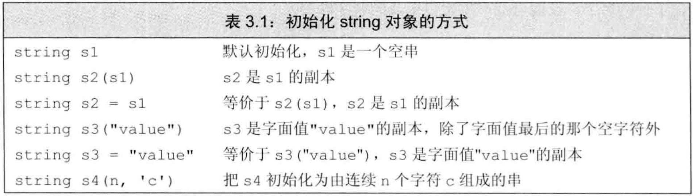
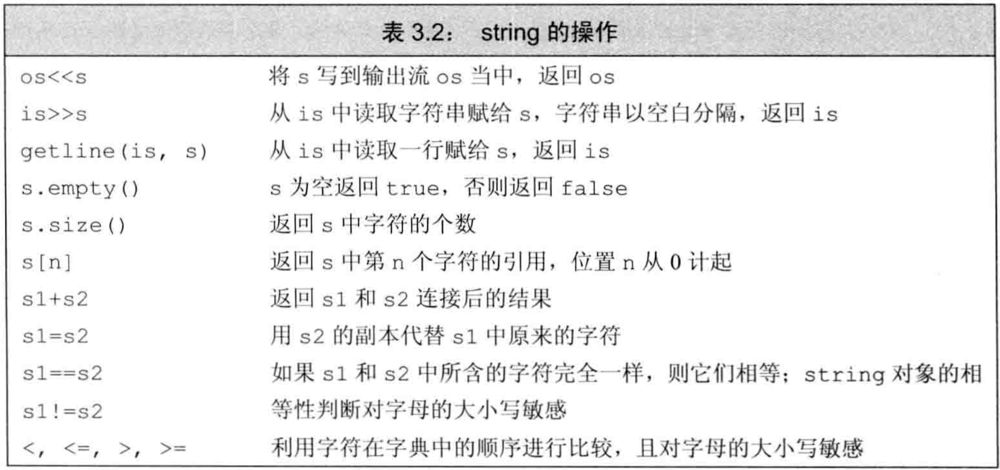
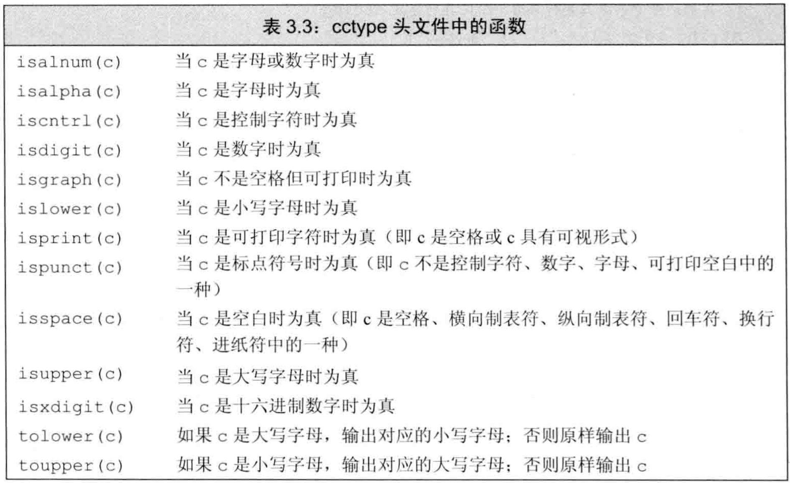
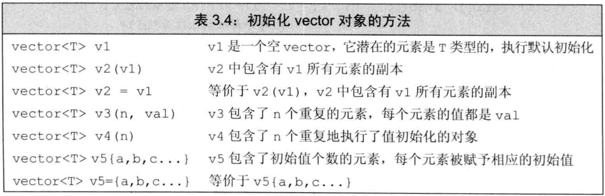
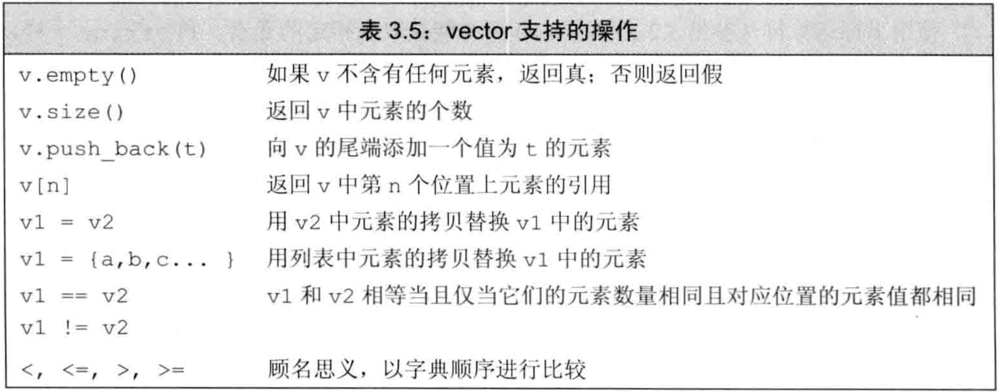
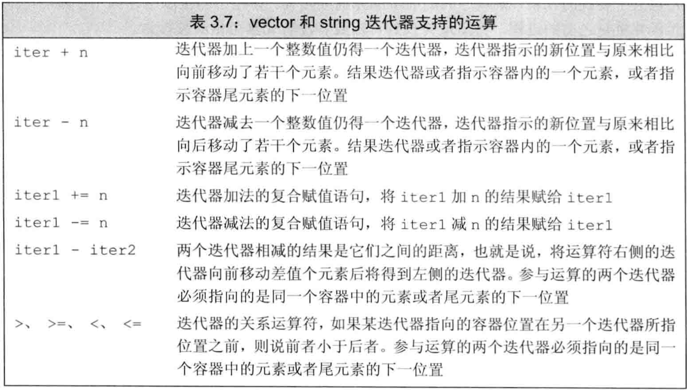
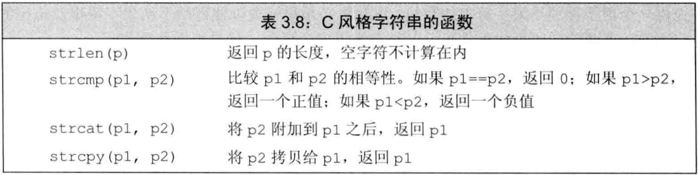

C++ primer 第3章 字符串、向量和数组
文章目录
string和vector是两类最重要的标准库类型，strng表示可变长的字符序列，vector存放某种给定类型对象的可变长序列。迭代器是string和vector的配套类型，常被用于访问string的字符或vector的元素。内置数组是更基础的类型，string和vector都是对它的抽象。内置类型是由C++语言直接定义的，体现了大多数计算机硬件本身具备的能力。标准库定义了另一组具有更高级性质的类型。
命名空间的using声明
域操作符::：编译器从操作符左侧名字所示的作用域中寻找右侧的名字。- 使用
using声明就不需要每次指定命名空间就能使用一个名字，形如using namespace::name;，这样以后可直接使用name。 - 每个
using引入一个名字，因此每个名字都必须有自己的using - 由于头文件的代码会被拷贝到引用它的文件中，故头文件的代码不应使用using
标准库类型string
string是标准库类型，表示可变长字符序列，定义在头文件string和命名空间std中。
定义和初始化string对象
- 如何初始化类的对象是由类本身定义。
- 例子：string的初始化
|
|

直接初始化：不用等号，而用括号初始化变量。调用构造函数拷贝初始化：用等号初始化变量。调用重载的赋值运算符- 可以先用
直接初始化构造临时量，然后拷贝初始化：string s=string(10,'c');
string对象上的操作
- 类既能定义通过函数名调用的操作（
成员函数），又能定义<<、+等各种运算符在该类对象上的新含义（重载运算符）。下表列举string对象可进行的大多数操作：  - 从iostream中读取string：用
>>读取时，string对象忽略开头的空白（包括空格、换行、制表符等），从第一个真正的字符读起，直到下一处空白为止。 - string对象的
<<和>>也是返回运算符左侧的iostream对象。 - 如要在iostream中读取时保留空白，需用
getline函数，该函数从iostream中读取内容，直到遇到换行（换行也被读入），然后把读到的内容存入string对象（不存换行符）。 - getline也返回它的iostream，故也可作为while的条件。
empty函数根据string对象是否为空返回一个boolsize函数返回string对象的长度（字符数）- size函数返回的类型是
string::size_type（可用decltype得到），它是无符号类型，且能放下任何string对象的大小。（attention：不能将size与int等有符号类型混合计算） ==和!=验证两字符串内容是否完全相同，<、<=、>、>=比较两字符串的字典顺序（大小写敏感）- 用
=进行string对象的拷贝和赋值 - 用
+拼接两string对象，也可拼接一个string对象和一个字符串字面值（类型转换），但不能拼接两个字符串字面值。因为string和字符串字面值是不同的类型
处理string对象中的字符
- 在
cctype头文件中定义了一组函数用于处理字符，如下表：  - C++标准库兼容了C标准库，C中命名为
name.h的头文件，在C++中被命名为cname，它们内容一样，但cname中的名字属于命名空间std，name.h中的名字不属于任何命名空间。（所以最好不要用C标准库） 范围for语句：用for(declaration:expression)遍历给定序列的每个元素。其中expression是一个序列，declaration定义一个变量，用于访问序列中的元素，常用auto。- 使用范围for时，如果要改变序列中元素的值，必须把循环变量定义为
引用类型。 - 例子：范围for中改变元素
|
|
- 访问string对象中的单个字符有两种方式：
下标和迭代器 下标运算符[]接受string::size_type（unsigned）类型的值，返回该位置上字符的引用（因此可修改字符）。若给索引提供signed值，会转为string::size_type表示的unsigned- 例子：用下标迭代
|
|
标准库类型vector
vector表示对象的集合，所有对象的类型都相同。- 由于vector容纳着其他对象，故称为
容器 - vector是一个类模板。C++中有
类模板和函数模板。模板本身不是类或函数，可将模板看作为编译器生成类或函数的一份说明。编译器根据模板创建类或函数的过程称为实例化 - 由模板生成类或函数时，必须指定类型
- 在C++11之前，元素为vector的vector对象，模板变量里必须有空格
- 例子：根据模板vector声明对象
|
|
定义和初始化vector对象

- vector的初始化方法有直接初始化、拷贝初始化、列表初始化
- 通常创建vector对象的方法是：先默认初始化得到一个空vector，再向其中添加元素
列表初始化：用花括号{}括起来的0个或多个元素赋值给vector对象。值初始化：可以只提供vector的元素数量而不提供初始值。此时元素都会被值初始化。如果元素是内置类型，会被置为0，如果元素是类类型，由类默认初始化（有些类不支持默认初始化，这时vector也无法初始化）。- 初始化的真实含义依赖于传参时用圆括号还是花括号。圆括号是构造，花括号是列表初始化。但当花括号无法初始化时，会尝试将花括号代替为圆括号。
- 例子：vector构造和列表初始化
|
|
向vector对象中添加元素
push_back函数：把一个对象当vector的尾元素压入vector尾端- 实际上，建立空对象再向其中push_back非常高效，比创建时确定大小之后再修改的方式更快。
范围for循环体内不应该改变其遍历序列的大小。
其他vector操作

- vector的
size方法返回该vector的元素数量，类型是vector<type>::size_type类型。使用size_type时，需首先指定是哪种类型的size_type。 - 只有元素类型可比较时才能将vector按字典顺序比较。
- 对vector索引时，下标类型是相应的size_type类型
- 不能用下标添加元素，用下标访问不存在的元素会引发错误（编译不报错），例如
缓冲区溢出等 - 确保访问元素有效的方法之一是使用
范围for
迭代器介绍
迭代器比下标访问更通用。所有标准库容器都支持迭代器，但只有几种支持下标。- string对象不属于容器，但操作上和容器很接近
- 迭代器提供了对元素对象的
间接访问，类似于指针。其对象是容器中的元素，或string中的字符 有效的迭代器或者指向某个元素，或者指向尾元素的下一位置，其他都是无效。
使用迭代器
- 有迭代器的类型都配套有返回迭代器的成员。其中
begin方法返回指向首元素的迭代器，end方法返回指向尾元素的下一位置（尾后）的迭代器。空容器的begin()和end()返回同一迭代器。 - 从函数中返回迭代器时，类型用
auto，不用管迭代器的类型。
- 可用
解引用符*访问迭代器指向的元素，类似指针。试图解引用无效或尾后迭代器都是未定义。 - 对迭代器使用
++可移动到下一个元素，它们是逻辑上先后的关系，空间上不一定相邻。 - 用
++、--、==、!=来进行遍历操作，因为这些操作在所有容器的迭代器上都有效。而索引和<、>等操作符在大多数容器的迭代器中未定义。 - 迭代器的类型是相应容器类型的
iterator和const_iterator，前者可读可写，后者只能读。类型书写如vector<int>::iterator。每个容器都定义了一个名为iterator的类型。 - 如果容器内对象为常量，则
begin和end返回const_iterator迭代器，否则返回iterator迭代器 cbegin方法和cend方法对任何容器都返回const_iterator迭代器- 通过迭代器调用元素对象的成员时，使用诸如
(*it).function()，括号必不可少，不然it先取成员再解引用。 - 通过迭代器调用元素对象的成员时，亦可使用简化的
->操作符，它将解引用和取成员两个操作结合，it->function()等价于(*it).function() - 任何可能改变容器容量的操作，如
push_back，都会使容器的迭代器失效。
迭代器运算
string和vector是顺序存储，故它们的迭代器支持更多的操作，如迭代器运算，这些操作可使迭代器每次移动跨越多个元素，也可对迭代器比较大小。 - 可使迭代器和整数值相加减，返回值是向前或向后移动若干位置的迭代器。
- 可使用关系运算符
>、>=、<、<=对迭代器比较大小 - 将迭代器相减，结果是两迭代器的
距离，指的是右侧迭代器向前移动多少位置能和左侧迭代器重合，距离可正可负。其类型是容器类型对应的difference_type，是signed的整型数。
数组
数组也是存放类型相同的对象的容器，这些对象本身没有名字，通过在数组中的位置访问。- 数组大小确定不变，不能增加元素。性能比vector等容器更好。
定义和初始化内置数组
- 数组是一种
复合类型，声明形如int a[d];，其中a是数组名，d是数组大小。数组大小也是类型的一部分，在编译时应该已知，必须是常量表达式。 - 默认情况下，数组元素被默认初始化
- 定义数组时应手动写出类型，不可用auto，但可用decltype
- 可对数组做列表初始化，此时不用手动指定大小，列表长度就是数组大小。如果手动指定大小，大小只能大于或等于初值列表大小，用初值列表初始化靠前元素，其后的默认初始化。
- 字符数组比较特殊，可用字符串字面值初始化，且不需手动指定大小，此时会在最后加上空字符。
- 例子：字符数组初始化
|
|
- 不能将数组拷贝给其他数组作为初值，也不能用数组为数组赋值。因为数组名是首元素地址，不能代表整个数组。有些
编译器扩展可能支持数组的拷贝，尽量不使用。 - 解读带数组的声名符：从内向外，从右向左
- 例子：
指针数组、数组指针、数组引用的声明
|
|
访问数组元素
- 数组元素可用范围for或下标访问
- 使用数组下标时，将其定义为
size_t型，它是一种机器相关的unsigned类型，它足够大以表示内存中任意对象的大小，定义于cstddef头文件中。 - 数组的下标类型由C++语言定义，vector等容器的下标类型由标准库定义。
指针和数组
- 使用数组名的时候，编译器一般会将其转换为指向首元素的指针。
- 对数组元素用
取地址符&能手动得到其指针 - 当数组名作为
auto变量初值时，推出的类型是指针而非数组，效果相当于对首元素取地址再给初值。但用decltype时，得到的是数组类型。 - 指针也是迭代器，string和vector的迭代器支持的运算都可被数组指针支持。
- 用
begin和end得到数组的首元素指针和尾后指针，这两个函数定义于iterator头文件中。由于数组不是类，故它们也不是成员方法 - 两指针相减的结果类型是
ptrdiff_t，定义于cstddef头文件，是一种signed类型。 - 指针运算与下标：表达式
*(ia+4)计算指针ia前进4个元素后的新地址并解引用，等价于ia[4] - 指针可使用下标。实际上，
对数组使用下标，其实是对首元素指针使用下标。此时编译器将数组名转为首元素指针，再对指针使用下标。 - 标准库内的迭代器下标必须为unsigned，但指针的下标是C++内置，可以处理负值，即
指针可接受signed下标
C风格字符串
C风格字符串不是一种类型，而是为了表达和使用字符串而形成的一种约定俗成的写法。按此习惯书写的字符串存在字符数组中且以空字符结束。一般用字符指针操作它们。- 一些操作C风格字符串的函数被定义在
cstring头文件中，传入这些函数的是字符指针，必须指向以空字符作为结束的数组。对这些函数而言，空字符是字符串结束的标志。  - 由于C风格字符串是字符指针，故：
- 用
==比较string对象，但只能用strcmp函数比较C风格字符串 - 用
+拼接string对象，但只能用strcat函数拼接C风格字符串 - 用
=拷贝string对象，但只能用strcpy函数拼接C风格字符串
- 用
- 对于strcat和strcpy，需提供存放结果的空间，并由程序员确保此空间不会溢出。
- 用标准库的string对象比C风格字符串更安全
与旧代码的接口
- 任何可出现字符串字面值的地方都可用C风格字符串（空字符结束的字符数组）替代，例如构造string、使用string的运算符时
- 如果程序需要C风格字符串，不能直接用string对象代替。应该用string对象的
c_str方法返回它对应的C风格字符串，且指针类型是const char *，保证不会改变string的内容。 - 不允许用数组初始化另一个数组，不允许用vector对象初始化数组，但允许用数组初始化vector对象。更进一步，可以用一对迭代器初始化vector对象。
- 例子：用数组的一对迭代器初始化vector对象
|
|
- 尽量用vector和迭代器，不要用数组和指针
- 尽量用string，不要用C风格字符串
多维数组
- C++语言并无多维数组，
多维数组是数组的数组。 - 对于
二维数组而言，第一个维度为行，第二个维度为列 - 可对数组用列表初始化，花括号可嵌套也可不嵌套。因为
数组连续存储 - 例子：多维数组的定义、绑定一行
|
|
- 如果要用
范围for和auto处理多维数组，除了最内层循环，其他所有循环的auto类型都应该是引用。 - 例子：范围for语句处理多维数组
|
|